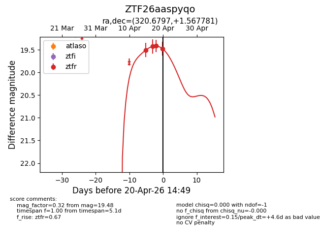
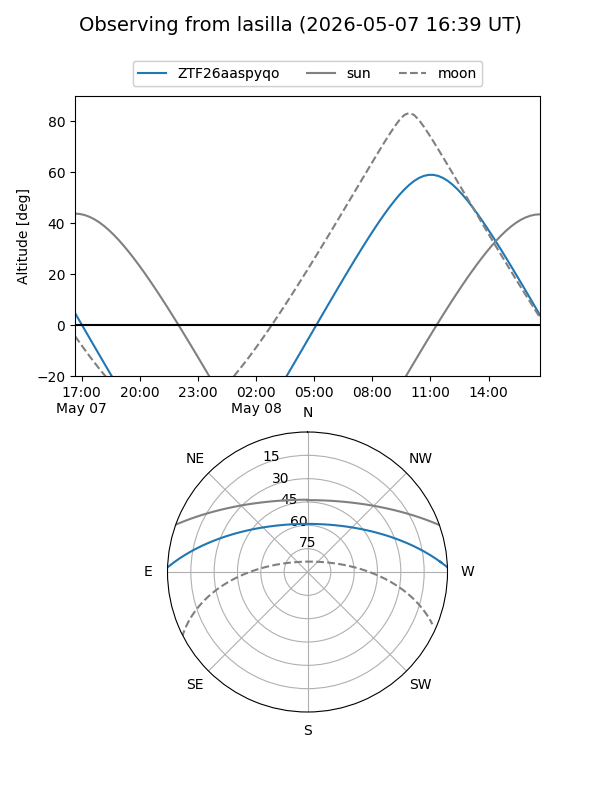
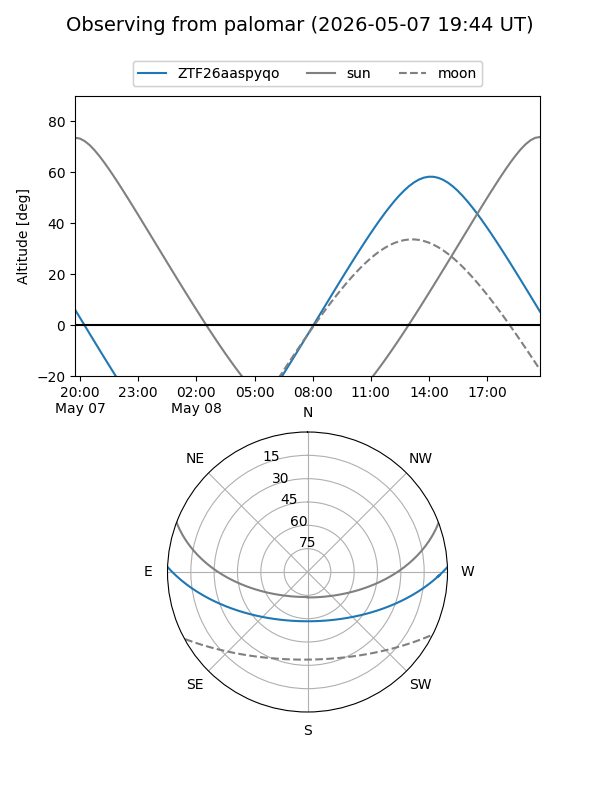
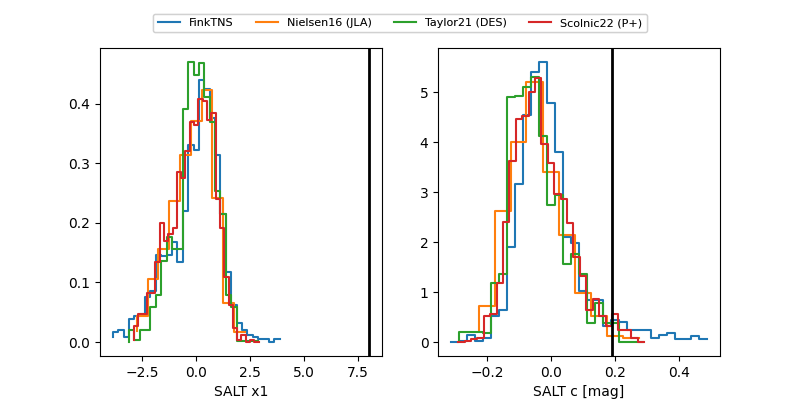

ZTF26aaspyqo
Target ZTF26aaspyqo at 2026-04-20 15:00
Aliases and brokers:
FINK: link
Lasair: link
ALeRCE: link
alt names
ZTF26aaspyqo (ztf,fink_ztf)
Coordinates:
equatorial (ra, dec) = 320.6797,+1.56778
equatorial (HMS+DMS) = 21:22:43.12,+01:34:04.01
galactic (l, b) = (53.9782,-32.21162)
Flags:
Photometry:
last ztfr=19.48
4 ztfr detections
Lightcurve

Visibility


Additional plots
